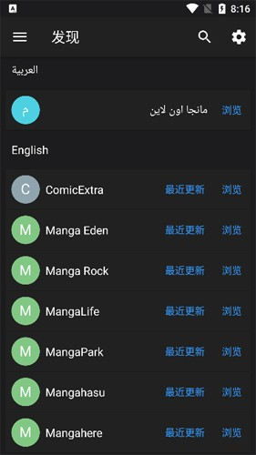

为什么 MangadeX 能让一个书架跨遍所有漫画源？拆解它的多源聚合设计
一个漫画阅读器为什么要做扩展系统、多源合并书架和统一下载队列？从架构层面拆解 MangadeX 的设计取舍，看懂"聚合"背后的工程逻辑。
你有没有过这种经历：同一部漫画在 A 站点更新勤、在 B 站点画质好、在 C 站点有你追的翻译组版本——于是手机上装了三四个漫画 App，每个都要单独登录、单独收藏、单独查更新。去MangadeX官网逛一圈就知道，它要解决的就是这个问题，但答案不是"再做一个阅读器"，而是换了一种思路：让应用本身不存内容，只存"你对内容的兴趣"。
这个思路说起来轻描淡写，落地却是一整套架构选择。想亲自体验一下这套设计的话，安装包从官方下载拿。我花了一周把它的扩展机制、书架数据结构和下载链路翻了一遍，想讲清楚三件事：它为什么要把"内容源"拔高到核心概念，扩展系统怎么跑起来，以及这套设计的代价在哪。
一、把「内容源」当第一公民——不是技术癖，是架构根基
大多数单源阅读器的内部模型很简单：作品 → 章节 → 图片，数据源是硬编码的。MangadeX 在这层之上插了一个东西：内容源（Source），而且把它抬到了模型最顶层。
这个选择意味着什么？我对照了它的发现页和书架实现。发现页按语种分组列出所有可用源，用户点某个源进去，才看到那个源的作品列表——这和单源 App 一打开就直接推作品完全不一样。书架更有意思：不管你从哪个源收藏的作品，进书架就全混在一起，排序和筛选规则对所有源一视同仁。换句话说，内容源在书架这一层被彻底抹平了。
抹平不是消失。内部数据结构里，每一章都保留了自己来自哪个源的记录——下载队列要靠这个去调对应的抓取逻辑，阅读器要靠这个决定图片加载地址。但对用户来说，书架里你只看到"在追的书"，看不到"在追的书来自哪个站"。
这层抽象带来的第一个好处是源之间互为备份。我自己碰到过好几次：常用的 MangaLife 抽风了，换 MangaPark 搜同一部作品，照样能收藏进书架继续追。如果当初它没把源抽成独立层，那换源等于换应用，书架得重建一次。

二、扩展系统：源可插拔才是聚合的灵魂
光有抽象层不够，源怎么进来？这就是侧栏里那个叫「扩展」的东西干的事。样本文档里说得直白：装一个扩展，对应源就出现在发现页；禁用，源就消失。我理解下来，这套机制其实解决了三个工程问题。
第一个是按需装配。内置源不可能覆盖所有人看的语种和风格。有人只看日漫英译，有人追韩漫，有人翻欧美独立漫画——扩展系统让应用启动时只加载当前启用的那批源，列表干净、加载轻快，不用为 80% 你不会碰的源付出启动时间代价。
第二个是坏了能换。内容站点的稳定性有多不靠谱，常看漫画的人都有数。某源今天可能被墙、明天可能改版、后天可能干脆关了。扩展系统让这件事的代价降到了"卸一个装一个"的操作级别，而不是等开发者发新版 App 修复。我见过其他聚合应用因为某个源挂了导致整个应用报错退出——MangadeX 不会，因为每个扩展都是独立模块，一个挂了不影响其他。
第三个是列表可长大。这是聚合应用的成长性所在。内置源永远是有限的，扩展把"加新源"的能力开放出来了。MangadeX文档里提到的 ComicExtra、Manga Eden、MangaPark，本质上都是扩展市场里别人贡献的接入方案。这和 VS Code 的插件、浏览器的扩展是同一个思路：核心做稳，生态做大。
这里有个细节值得提一下：扩展不只是一个开关，它背后是一套抓取逻辑。每个扩展要负责把目标站点的 HTML/JSON 解析成 MangadeX 统一的内部模型——作品列表、章节列表、图片 URL。不同站点结构天差地别，这套适配工作全在扩展里完成，主应用只认统一接口。这才是"可插拔"真正的含义：插进来的不只是一个名字，是一整套能跑的适配代码。
三、书架为什么排第一？因为它是唯一持久的东西
侧栏菜单的排序是：书架 → 发现页 → 收藏 → 下载队列。注意这个顺序：书架在最前面，发现页反而靠后。单源应用一般是发现页或首页排第一，因为那是"流量入口"。MangadeX 反过来了。
这个排序不是 UI 设计的偶然。它反映了开发者对"什么是用户真正的资产"的判断：源可以随时换，扩展可以随时装，但你的书架才是长期沉淀下来的东西。我收藏了 37 部在追的作品，不管明天 MangadeX 生态怎么变，这些作品的收藏状态、阅读进度、下载记录都得跟着我走。
书架顶部那三个筛选开关（已下载、未读、已完结），其实是在给这个持久资产配工具。勾「未读」能一眼看到还有存货的作品——这对应晚上睡前选书的场景；勾「已下载」是出门前的离线检查；勾「已完结」用来从完结堆里挑一部一口气消化。三个开关本质上是在让你从书架这个"你的漫画库"里不同维度地取东西，而不是被推荐算法推着走。
四、取舍：聚合的代价在哪
讲到这里你可能觉得这套设计全是优点，但我必须提两个代价。
第一个是扩展生态的依赖风险。扩展是别人贡献的，更新不及时、适配出错、或者开发者不再维护——这些都可能发生。我碰过一次：一个常用扩展因为目标站点改版导致章节列表抓不到，等了三天才有人更新扩展包。那三天里那个源在我发现页上是空的。这不是 MangadeX 的 bug，是扩展系统作为开放生态的固有代价。文档里"内容源打不开怎么办"那一节，本质上就是在教人怎么在这个开放生态里自救。
第二个是统一体验下的妥协。不同源的章节编号规则、更新频率、图片分辨率可能都不一样。统一到一个书架里意味着你得接受：同一部作品在源 A 上是 1500px 宽，在源 B 上是 800px，书架不分这个；或者源 A 周更、源 B 月更，书架的"最近更新"只看哪个源先推来新章节。聚合的便利是用细节一致性换的。
五、这套设计适合谁
写了这么多架构，最后落点到使用判断。MangadeX 这套多源聚合 + 扩展机制 + 书架中心的设计，适合下面这类读者：
- 追多部作品且不拘源：同一部在不同源更新节奏不同，聚合让你只维护一个书架，不用在多个 App 之间跳着看更新
- 有离线阅读需求：通勤、地铁、长途——出门前花五分钟勾「已下载」清点书架、补齐缺口，断网时就能直接读，这套离线准备流程是围绕书架筛选设计的
- 愿意花五分钟调扩展：如果你的阅读需求比较垂直（比如只看某国语言、某种风格），花个十分钟把不需要的扩展卸了、常用的装上，发现页会干净很多
反过来，如果你只追两三部固定源的作品、或者根本不关心离线——那它的扩展性你可能用不上，它的多源抽象对你来说反而是层多余的复杂度。
国内有时候 GitHub 访问慢，GitHub上的同一份资料也同步到了Gitee和GitCode，三个渠道任选一个都能拿到完整文档和扩展列表。